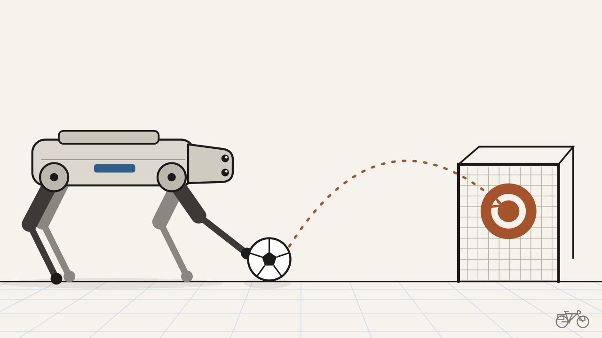

2023 – 2024 · Hybrid Robotics Lab, UC Berkeley; research report
Robot Soccer
One reinforcement-learning policy walks a Unitree Go1 robot dog to a ball, kicks it at a target and stays balanced; trained only in simulation, it hit the target about 60% of the time on the real robot.
The question
Kicking a ball at a target is really three skills in a row: get to the ball, kick it the right way, and don’t fall over afterwards. Earlier work in the lab split this into separate policies, one per skill, with the kick following a planned curve.
The question is whether a single policy can learn the whole task.
Setup
A Unitree Go1, a small four-legged robot, trained with PPO in IsaacGym, a GPU simulator that runs thousands of robots at once. Each episode places a ball and a randomly chosen target. The policy sees the robot’s position, orientation and joint angles, where the ball started, where it is now, and the target.
Walking comes from a central pattern generator, which gives each leg a rhythmic path to follow: a trot at 0.5 m/s with diagonal legs in step. To kick, the target speed drops to zero and the legs stop stepping, so the robot stands instead of marching in place. My part was the stage-switching rewards and the gait tracking.
How it works
- A status flag reads two distances
- Track: trot to the ball, facing it
- Kick: stop, send the ball toward the target
- Hold: stay balanced while the ball travels
- The rewards grow from stage to stage
- Trained in IsaacGym, run on the real Go1
Far from the ball means track. Close, with the ball still where it started, means kick. Once the ball has moved, it’s hold. Until a stage needs them, the ball’s live position and the target are fed in as zeros, so the input never changes size.
Results
Trained only in simulation, the policy ran on the real Go1 and hit the target about 60% of the time, going from walking to kicking to holding still as one network.
Each kick was judged on how far the ball ended from the target, the direction it left in, how long it took to get there, and whether the robot stayed steady afterwards.

What didn’t work
The report gives the 60% without a trial count or a side-by-side comparison with the earlier multi-policy system, so it shows the approach works, not that it’s better.
Simulation can’t fully reproduce the ball’s friction on the ground, how it deforms when kicked, or sensor noise. I prototyped RLPD, fine-tuning the simulated policy on real robot runs, but it isn’t part of the reported result.
What’s next
Track the ball and target with a camera, and finish the RLPD fine-tuning on real runs.